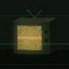

COLD SAVE
Cold Save is a faceless YouTube channel (@coldsavecases) that tells real cold cases, unsolved disappearances and strange-but-true cases as short, researched "case files" in a lo-fi early-2000s horror style.
A new case every 8 hours. Full files every Sunday.
Every case is real and researched from public records, official case databases and published reporting. Sources are listed in each video's description. We don't name people who were never charged, and we don't show real victims' faces. Visuals and narration are AI-assisted. The cases are not.
About the Cold Save Pipeline app
"Cold Save Pipeline" is the private, single-channel tool that publishes Cold Save's own videos. It is used only by the channel owner, on the channel owner's own YouTube account. It uses the YouTube Data API and YouTube Analytics API to:
- upload the channel's own videos and schedule when they go public;
- set the channel's own description, keywords, banner and playlists, and add videos to those playlists;
- post the channel's own comment on its own videos, and read public comments on its own videos to find which cases viewers are asking for;
- read the channel's own video performance statistics to decide which formats work best.
It has no other users and no public sign-in. See the Privacy Policy for exactly what data it touches.
Contact
Use the contact email on the channel's YouTube About page, or open an issue at github.com/PrestonHenryCobb/AI-Content-Workflow. If you're connected to a case and want a video changed or removed, it will be handled promptly.
Cold Save uses YouTube API Services. YouTube Terms of Service · Google Privacy Policy